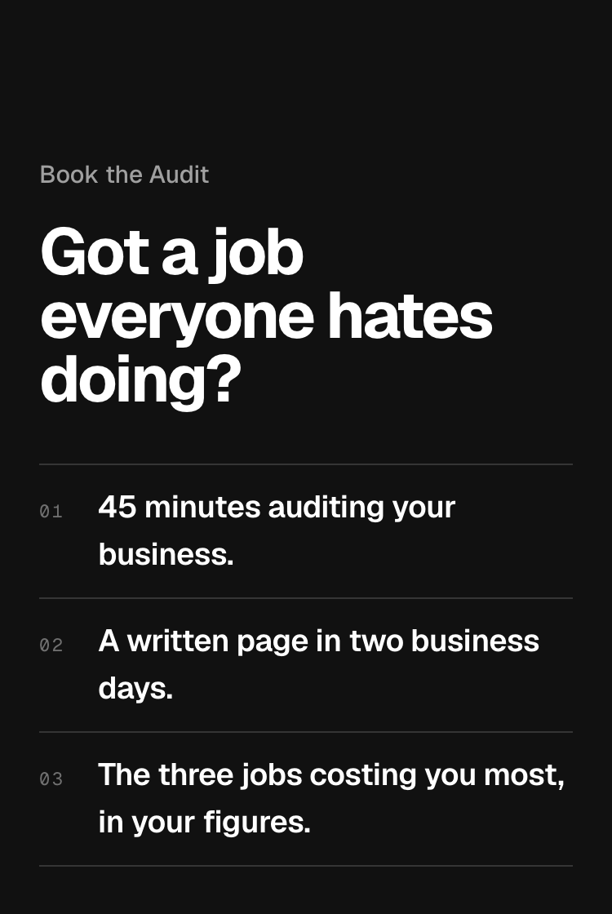
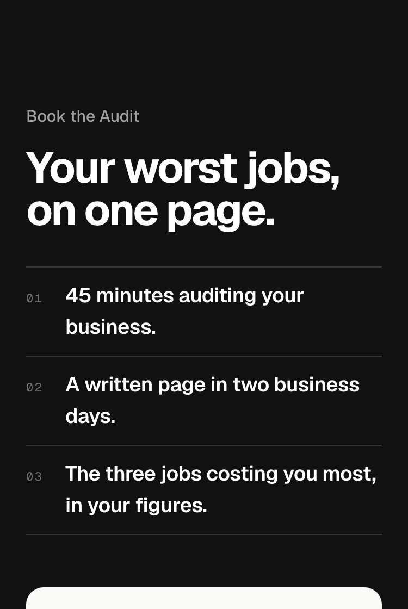
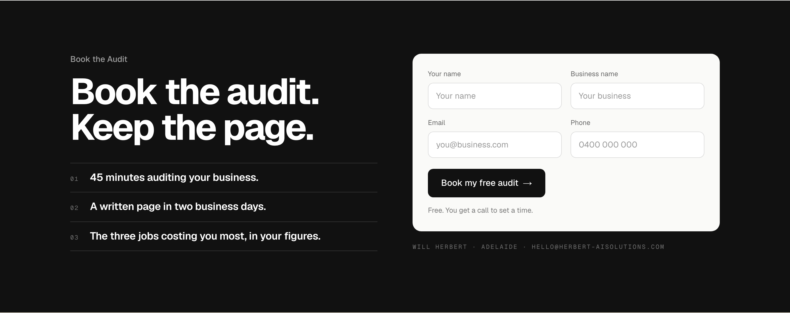
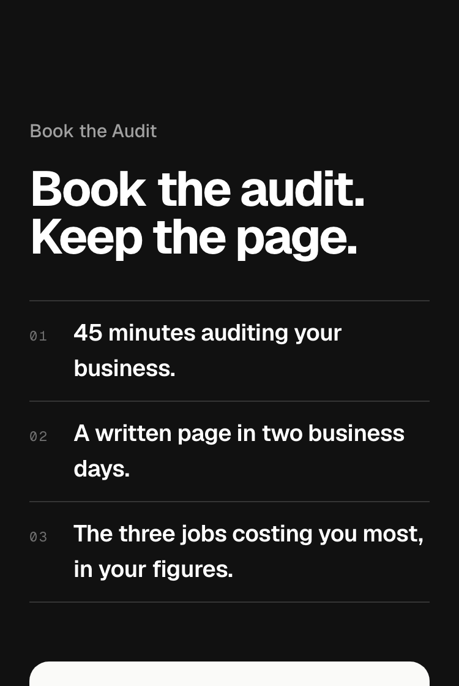
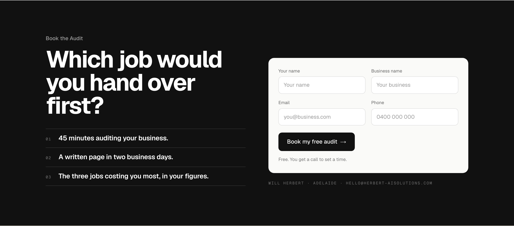
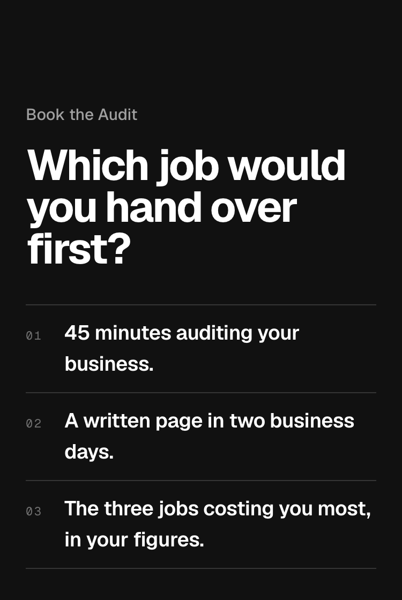

TodayThe owner’s words, a question that makes them think of one job. Says nothing about what they get.


Book the Audit, detail 1 of 4. Only the heading changes. 14 lines that passed the gates (true of the audit as /pilot describes it, no result promised; a question allowed as a single close), scored on the second sheet, the best three beside today.





